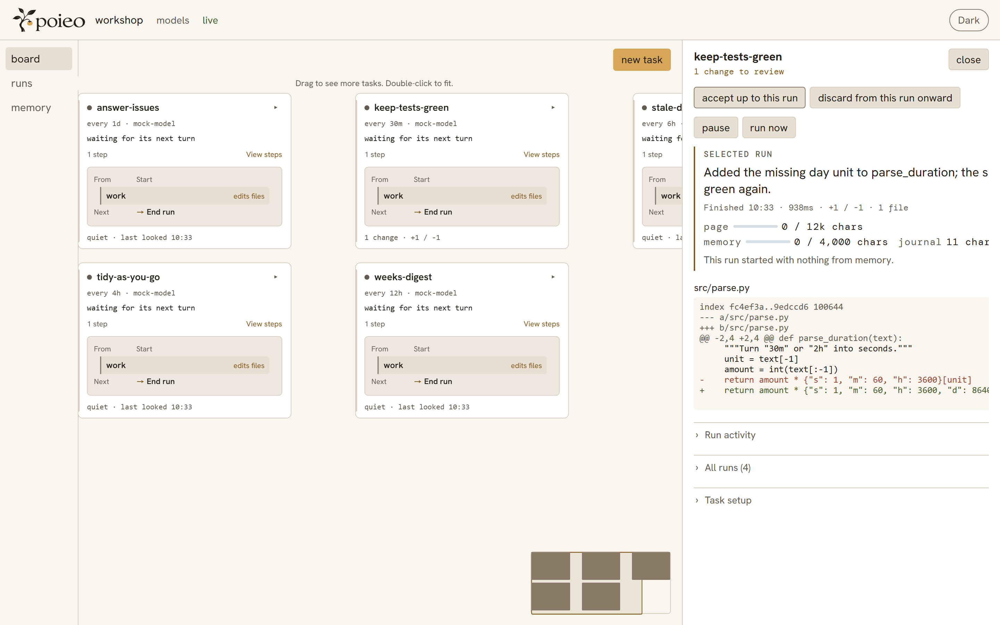

Small models
Keep reading, sorting, and routine checks light.

Small and large models, working together.
Get startedKeep reading, sorting, and routine checks light.
Give demanding reasoning and changes more room.
Judge the work with tests and a result you can review.
You choose the model for each step. Savings and accuracy depend on your models, tasks, and checks.
Choose your modelsWrite a task. Choose its models. Let poieo keep it running.
A folder, instructions, and a schedule. Start with one step or build a few.
Follow progress and results. Each task keeps a journal for the next run.
In a Git project, work happens in a private copy. Read the diff, then accept or discard it.

Try it offline with a scripted model. Connect your models when you are ready.
Read the guidegit clone https://github.com/luceinaltis/poieo
cd poieo
pip install .
mkdir my-board
cd my-board
poieo init --mocktasks/keep-green.yamlname: keep the tests green
folder: /path/to/your/git-project
prompt: |
Run the tests. Find and fix a failing test.
Run them again to check the change.Choose an existing folder. The mock exercises the loop without calling a real model.
poieo daemonOpen the board at http://127.0.0.1:8484. Then choose the models for your real work.